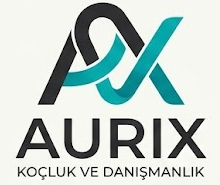
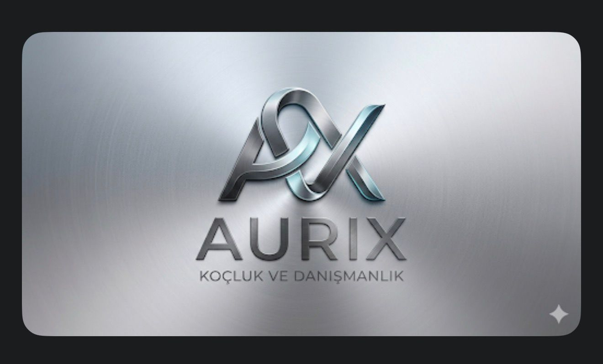
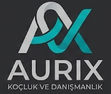

Neden bu arayüz, bu logo sistemi ve bu platform mimarisi?
Bu rapor, Kognitect tarafından AURIX Koçluk ve Danışmanlık için yürütülen dijital kimlik ve web platformu çalışmasının marka danışmanı bakış açısıyla özetidir. Amaç; henüz tamamlanma aşamasındaki web sitesinin arkasındaki kararları, müşteriye sade, gerekçeli ve doğrulanabilir biçimde anlatmaktır.
AURIX için asıl mesele bir web sitesi değil, güven inşasıdır.
AURIX, farklı disiplinlerden gelen uzmanları aynı çatı altında toplayan bir koçluk ve danışmanlık ekosistemidir. Bu yapı doğru anlatıldığında güçlü bir avantajdır; yanlış anlatıldığında ise ziyaretçiye dağınık, ortak tabela altında birleşmiş bağımsız uzmanlar izlenimi verebilir.
Kognitect olarak proje boyunca tüm kararları tek bir soruya göre değerlendirdik:
AURIX, wellness değil; profesyonel gelişim ve danışmanlık markasıdır.
AURIX için önerilen marka cümlesi: Profesyonel gelişim, kariyer netliği ve liderlik dönüşümü için çok uzmanlı koçluk ve danışmanlık ekosistemi.
Profesyonel gelişim
Kişisel gelişim veya spiritüel dönüşüm algısından uzak, daha kurumsal ve güven veren bir alan açar.
Kariyer ve liderlik
Hedef kitlenin somut ihtiyacını işaret eder: karar, yön, iletişim, performans ve gelişim.
Çok uzmanlı yapı
AURIX'in tek bir kişiden değil, farklı uzmanlıklardan beslenen bir ekosistemden oluştuğunu anlatır.
Ortak metodoloji
Uzman çeşitliliğini dağınıklık değil, yapılandırılmış bir çalışma biçimi olarak konumlar.
Müşteriden gelen metalik logo, dijital kullanım için flat sisteme dönüştürüldü.
AURIX'in başlangıçta ilettiği logo metalik ve 3D etkiye sahipti. Bu versiyon markanın premium hissini taşısa da, web arayüzünde küçük boyutlarda okunurluk, farklı zeminlerde tutarlılık ve modern dijital görünüm açısından riskler oluşturur.


Neden flat logo?
- Küçük header alanında daha okunaklıdır.
- Mobil ekranlarda form ve yazı detayları daha net kalır.
- Modern web arayüzüyle daha uyumlu görünür.
- Farklı zeminlerde ve sosyal medya önizlemelerinde daha tutarlı çalışır.
- Metalik logonun premium referansını korur, fakat dijital üründe daha hafif taşır.
Renk sistemi logodan türetildi: silver-teal, sessiz güven.
| Renk | Rol | Kullanım Gerekçesi |
|---|---|---|
| Turkuaz | Birincil vurgu | CTA, link ve odak durumlarında markanın enerjisini taşır. |
| Koyu turkuaz | Buton zemini | Beyaz metinle daha güvenli kontrast verir. |
| Altın | İkincil hiyerarşi | Overline ve küçük ikon vurgularında premium hissi destekler. |
| Sıcak kırık beyaz | Sayfa zemini | Steril beyaz yerine daha sakin ve insani bir yüzey oluşturur. |
| Grafit | Koyu yüzey | Footer ve koyu bölümlerde ciddiyet ve kurumsal ağırlık verir. |
Tipografi üç role ayrıldı: başlıklarda editoryal ve güven veren serif karakter; gövde ve arayüzde okunabilir sans-serif; bölüm etiketlerinde ise teknik, düzenli ve ayırt edici monospace kullanım.
Gösteriş yerine sessiz güven.
AURIX'in hedef kitlesi, karar alırken abartılı efektlerden çok açıklık, düzen ve profesyonel tutarlılık arar. Bu nedenle arayüzde ana hedef "etkilemek" değil, güven hissini azaltmadan bilgiye erişimi hızlandırmaktır.
- Hizmetler dört net kategori altında toplandı.
- Her bölüm aynı overline ve başlık ritmiyle açıldı.
- Ön görüşme talebi ana dönüşüm aksiyonu olarak konumlandı.
- Uzman profilleri tek editoryal şablonla düzenlendi.
- Journal, marka otoritesini destekleyen bilgi kütüphanesi olarak kurgulandı.
Site akışı, ziyaretçiyi meraktan ön görüşmeye taşır.
| Bölüm | Görevi |
|---|---|
| Hero | AURIX'in ne yaptığını ve ilk aksiyonu hızlı anlatır. |
| Güven / disiplin alanı | Farklı uzmanlıkların ortak çerçevede çalıştığını gösterir. |
| Hizmetler | Kullanıcının kendi ihtiyacını doğru kategoriye yerleştirmesini sağlar. |
| AURIX yaklaşımı | Sürecin rastgele değil, metodolojik olduğunu gösterir. |
| Uzmanlar | Ekibi tek marka sesiyle sunar. |
| Kimler için? | Farklı hedef kitlelerin kendini sitede bulmasını sağlar. |
| Journal | Uzmanlık ve SEO otoritesini güçlendirir. |
| Final CTA | Ön görüşme talebine net kapanış yapar. |
Teknoloji seçimi, AURIX'in içerik bağımsızlığı için yapıldı.
| Katman | Teknoloji | Neden |
|---|---|---|
| Frontend | Next.js 15 + TypeScript | SEO, hız, güvenilir geliştirme ve ölçeklenebilir sayfa yapısı. |
| Tasarım sistemi | Tailwind CSS | Renk, tipografi ve boşluk kararlarının kodda tutarlı uygulanması. |
| CMS | Payload 3 | Admin panelin aynı uygulama içinde yönetilmesi. |
| Veritabanı | PostgreSQL | Uzman, hizmet, makale ve başvuru ilişkilerini güvenilir tutma. |
| Zengin metin | Lexical | Journal ve biyografi içeriklerinin editör dostu yönetimi. |
| Görsel işleme | sharp | Medya dosyalarını farklı kullanım boyutlarına hazırlama. |
Faz 1 tamamlanmadan önce kalite turu yapılmalıdır.
İçerik onayı
Uzman biyografileri, hizmet açıklamaları ve CTA metinleri müşteri tarafından son kez doğrulanmalıdır.
Görsel kontrol
Mobil, tablet ve desktop kırılımlarında logo, görsel, boşluk ve metin taşmaları kontrol edilmelidir.
Admin panel testi
Uzman, hizmet, Journal ve lead akışları gerçek veriyle denenmelidir.
Yayın öncesi metrikler
Performance, Accessibility ve SEO denetimleri tamamlanarak yayın kararı verilmelidir.
Kognitect'in çalışması, AURIX için bir site değil, yönetilebilir bir marka-platform temeli kurar.
AURIX'in metalik logosu marka kökenindeki premium hissi taşırken, web sitesinde kullanılan flat logo sistemi bu kimliği daha okunur, daha çağdaş ve daha sürdürülebilir hale getirir. Arayüz dili gösterişli efektler yerine sessiz güven, hızlı bilgi erişimi ve kurumsal tutarlılık üzerine kurulmuştur.
Faz 1'in sonraki adımı; müşteri onayı, içerik doğrulaması, performans denetimi ve yayın öncesi kalite kontrolleriyle bu altyapıyı canlı kullanıma hazır hale getirmektir.